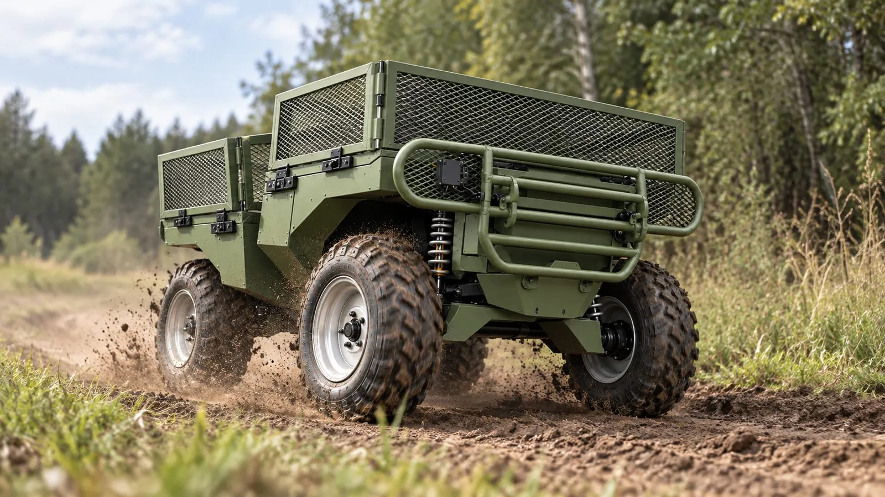
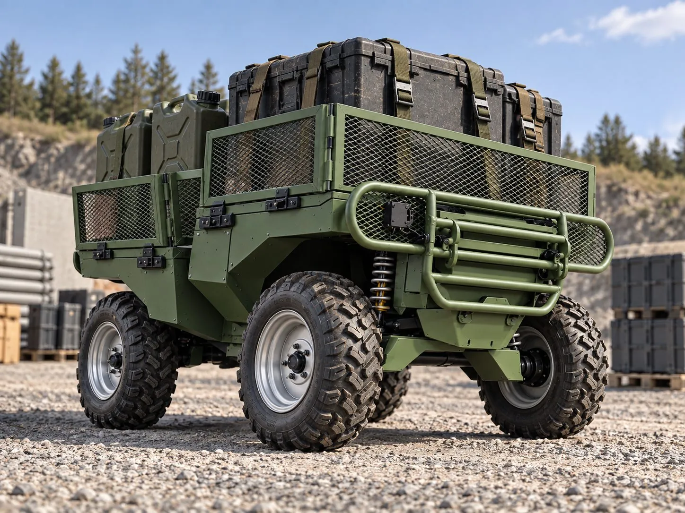
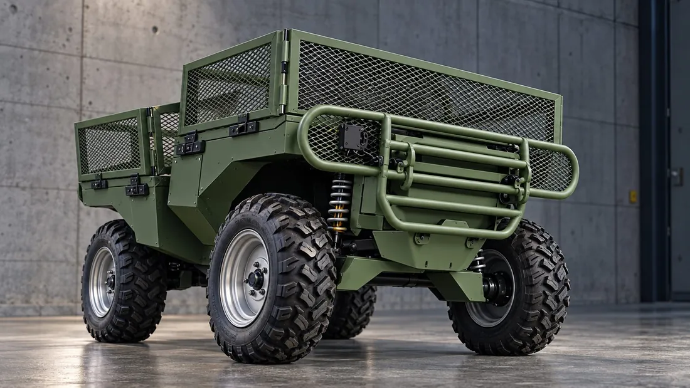
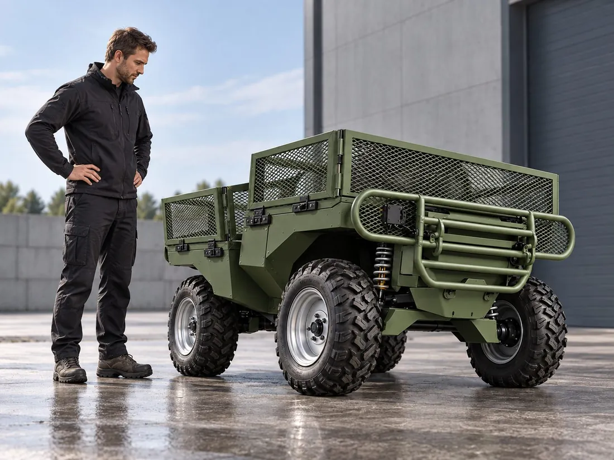
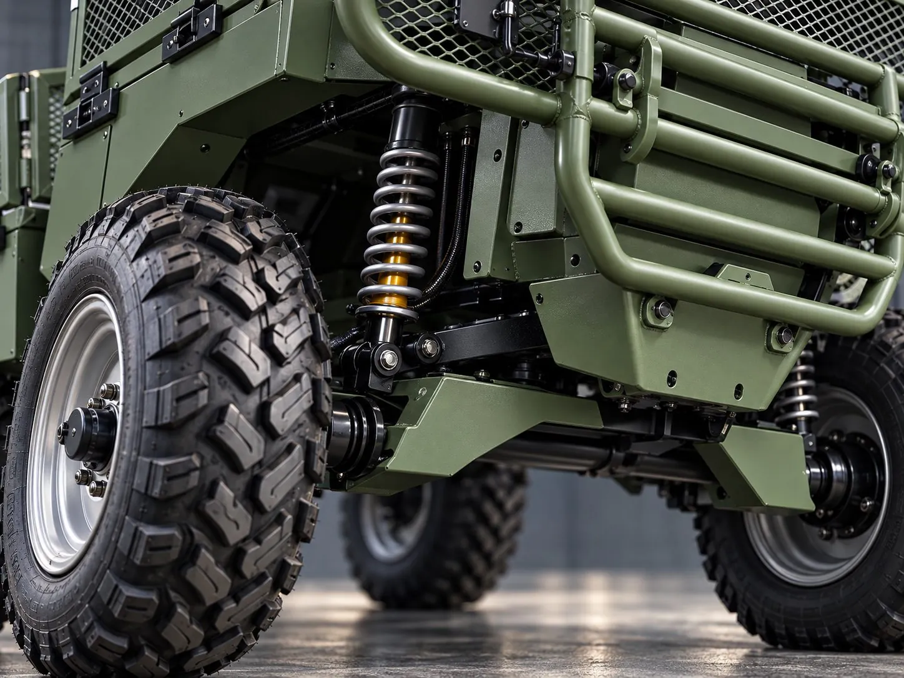
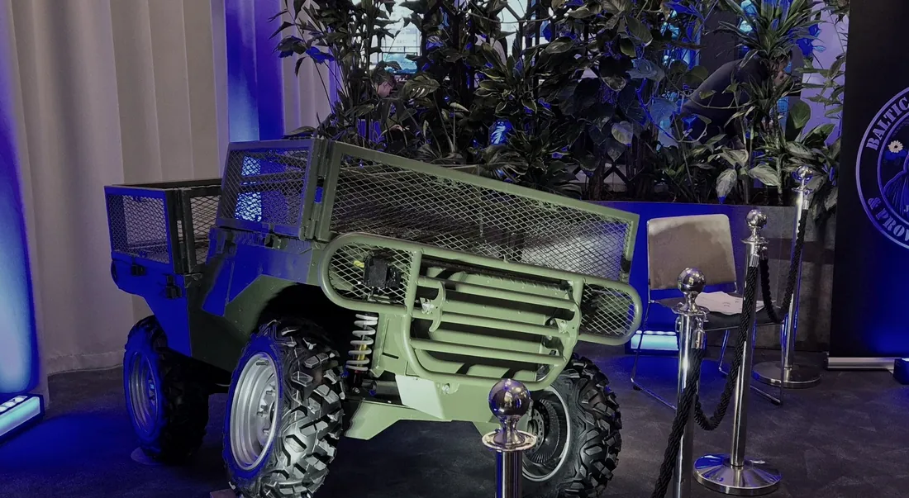

RenderBadger
An electric unmanned ground vehicle for small-unit logistics.
Badger carries 250 kg of a squad’s load: ammunition, water, batteries or a casualty. One platform covers resupply, sensor carriage, drone charging and light casualty evacuation. Designed, fabricated and assembled in Tallinn, Estonia.
TRL 6, in field development. The full-size prototype is in field testing with Kaitseliit. The Estonian Ministry of Defence funded the programme in its 2025 defence R&D round, one of fourteen projects chosen from thirty-one applications.
What it carries
The cargo bed and the onboard power supply accept mission-specific payloads. Four roles define the current configuration.
Resupply
Moves ammunition, water and stores forward at up to 250 kg a run, and carries loads back on the return leg.
Sensors
A mobile mount for ISR payloads, powered from the vehicle’s own pack rather than a separate battery.
Drone support
The 15 kWh pack recharges and relays for UAS well forward of the nearest generator.
Light CASEVAC
Carries up to two casualties out of contact on the bed, under teleoperation. Tows a trailer and carries a winch for recovery.

Badger, current configuration
| Payload | 250 kg |
|---|---|
| Curb weight | Approx. 450 kg |
| Range | Up to 150 km* |
| Maximum speed | 30 km/h |
| Power | 48 V lithium-ion with BMS, 15 kWh |
| Suspension | Independent, upgrade-ready |
| Signature | Low acoustic, low thermal |
| Dimensions | 1800 × 1250 × 1050 mm |
|---|---|
| Wheelbase | 1200 mm |
| Ground clearance | 350 mm |
| Control | Teleoperated. Waypoint and autonomy in development. |
| Communications | Estonian-built radio, Starlink, repeater drone |
| Towing and recovery | Trailer hitch, winch |
| Transport | Fits a microbus or a standard trailer |
*Range depends on terrain, load and duty profile. These figures describe the current build and change as the platform develops. Ask us for the configuration that matches your requirement.


Electric drivetrain
Low acoustic signatureThe electric drivetrain runs quieter than a diesel equivalent on a resupply run.
Low thermal signatureThere is no engine block and no exhaust, which reduces the thermal signature of the vehicle.
No fuel chainThe vehicle charges from the grid, a generator or another vehicle. This removes one class of supply from the forward chain.
Deployable powerThe battery pack also serves as a field power source for drones, radios and sensors.

Where the programme stands
2025, full-size prototype
Badger reached TRL 6 and received development support from the Estonian Ministry of Defence following a competitive defence R&D call. Estonian public broadcaster ERR filmed the vehicle for Terevisioon in October 2025.
2026, field development
Field testing with Kaitseliit. Drivetrain, suspension, communications, power system and payload integration continue to evolve based on field experience.
Next, operational validation
Expanded trials with defence users, integration of additional sensors and communications, and preparation of the next vehicle iteration.
Towards production
Design-for-manufacture, supply-chain development and preparation for low-rate production.

Enquiries
For procurement, trials, integration or distribution, contact us directly. Enquiries are answered by a member of the founding team.
Sales and partnerships
Engineering roles
We accept open applications from engineers. See the disciplines.
Ratel Robotics OÜ
Oda tn 4-45
Tallinn 10415
Estonia